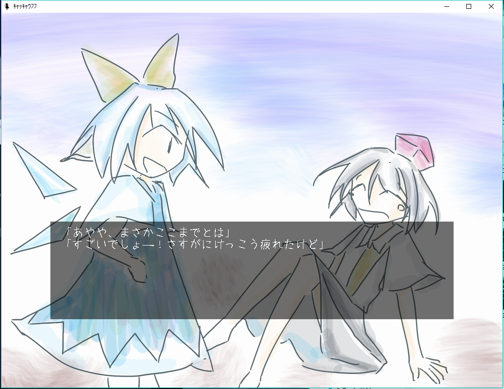

Works(詳細)


ようせいのラインストラテジー!(博麗神社例大祭11)
妖精を召喚して戦う、面クリア方式のラインストラテジーゲームです。例大祭11で頒布しました。各ステージクリアごとに通貨である飴が付与され、その飴を使って新しい種類のキャラクターを開放したり強化したりできます。ソーシャルゲーム特有のエフェクトバリバリなイラストに惚れていた時の作品で、スペルカードのカットインにそれがよく現れています。スペルカードの効果を意識的に強く設定することで、強い敵が出たタイミングでじゃんじゃか使ってカットインを連続で出して気持ちよくなってもらうことを狙っています。
スクリーンショット

うにを食べるゲーム(調布祭2013)
次々と出される料理から、うにを選んで食べるミニゲームです。規定の皿数食べるとクリアです。アニメーション部分に拘ったため、ゲーム自体はわりと単調です。
スクリーンショット
チルノちゃんの大戦争EX前夜(C84)
面クリア方式の、オーソドックスな縦STGです。C84で頒布しました。クリア状況はセーブファイルに書き込むので安心です。敵の落とす点符を100枚集めるとエクステンドします。エクステンド時には6秒ほどの長い完全無敵が付与されるので、非常に強力です。残機が少ない状態だと点符が少しずつ増えるため、ギリギリになっても頑張って避けていれば反撃のチャンスがやってくるようにしています。
スクリーンショット
うにを避けるゲーム

一定時間うにを避けるゲームです。スペースキーを押している間は時間の進みが遅くなるため、ここぞという時に使います。実はバグなのですが、スペースキーを離したタイミングで一瞬だけ異常にフレームレートが上がってしまいます。ほぼ確実に被弾してしまうのですが、強力な時間操作に対するペナルティとして有効なので、放置しています。
スクリーンショット